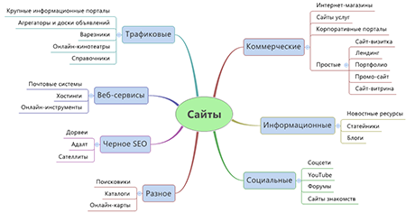

Типы сайтов

Владельцы сайтов решают с помощью сайтов разные задачи
— от продажи товаров до изменения общественного мнения.
Мы приведём примеры нескольких типов сайтов, созданных для различных задач,
но это не исчерпывающий список.
Сайт-визитка — небольшой сайт из одной или нескольких страниц,
на котором размещают основную информацию о человеке, компании,
товаре или услуге. На сайте-визитке можно разместить описание товара или компании,
фотографии и контактные данные. Допустим, SMM-специалист
может создать сайт-визитку,
чтобы рассказать о своих услугах.
Корпоративный сайт — сайт с подробной информацией о компании, её товарах или услугах.
Также на сайте могут быть разделы с новостями, документами, вакансиями.
Корпоративные ресурсы создают, чтобы продавать товары или услуги.
Поэтому на корпоративных сайтах, в отличие от сайтов-визиток,
можно оформить заказ или хотя бы
связаться с менеджером — например,
оставить заявку на обратный звонок
Интернет-магазин — сайт, на котором продаёт товары один продавец. В интернет-магазине
есть каталог товаров, корзина и система оплаты. Интернет-магазины заводят производители,
дистрибьюторы, торговые компании.
На интернет-магазины похож другой тип сайтов — маркетплейсы.
Это онлайн-площадки, где торгует множество продавцов.
Владелец сайта при этом не сам продавец, а
компания-посредник.
Новостной сайт — ресурс, на котором размещают новости.
Новостной сайт может быть узкотематическим — например,
только с новостями спорта.
Новостные сайты создают, например, СМИ,
которые раньше существовали в офлайне.
Чтобы заработать,
владельцы таких ресурсов размещают на них рекламу.